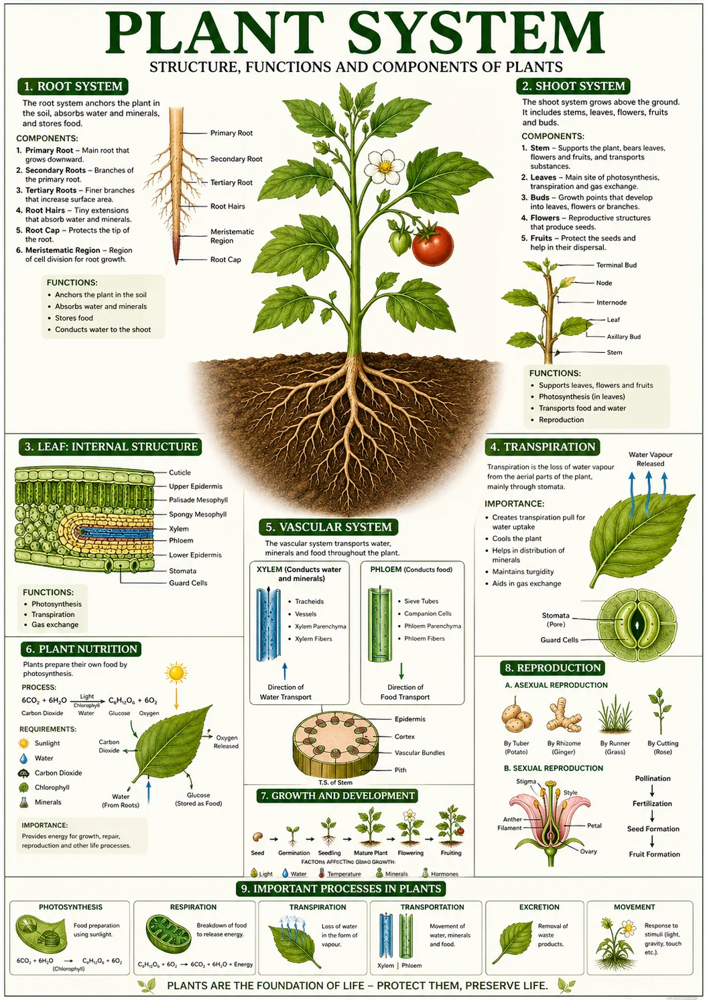
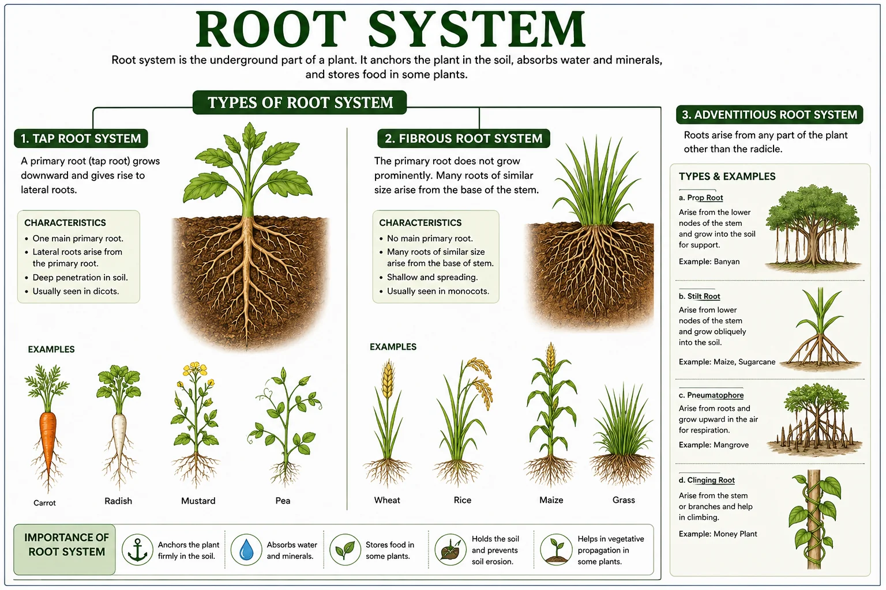
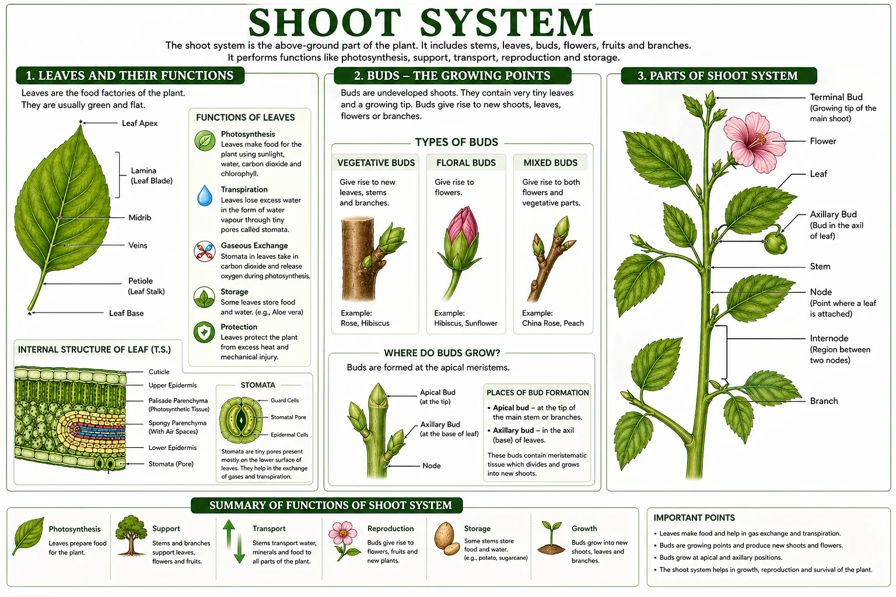
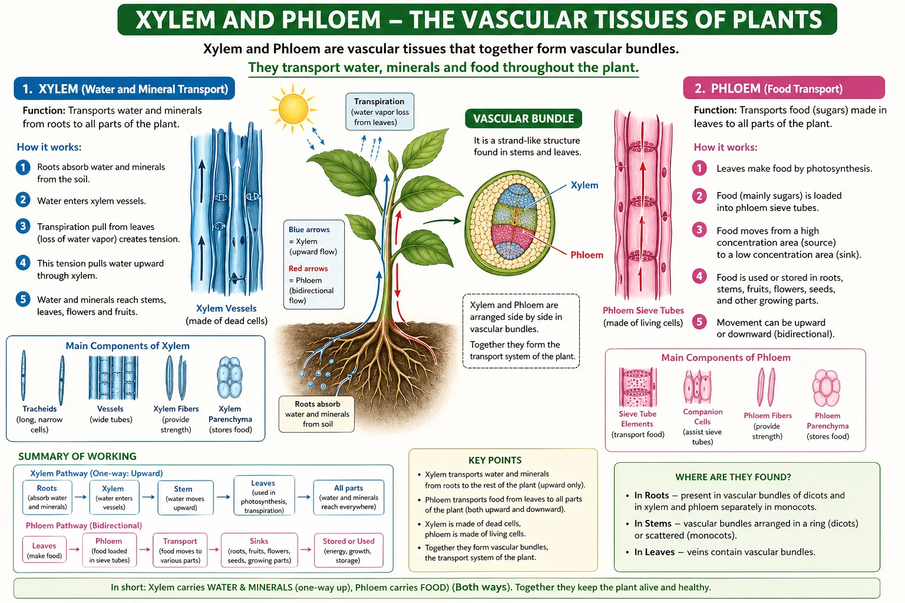
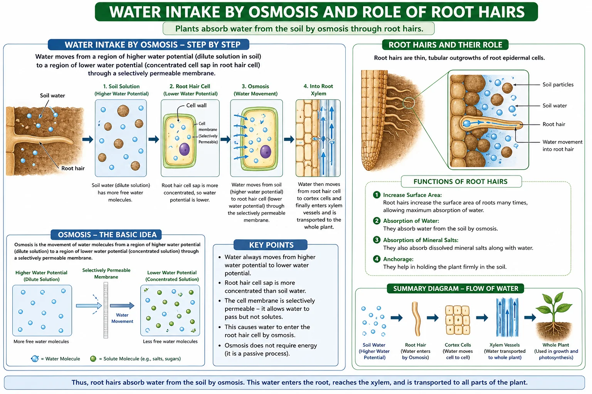
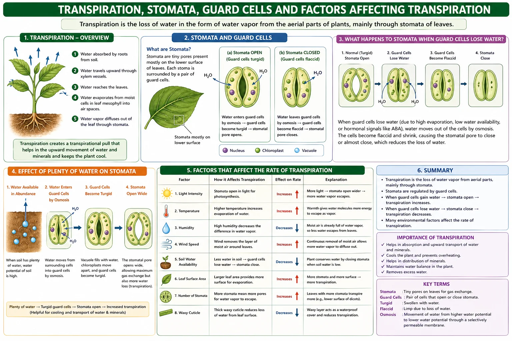
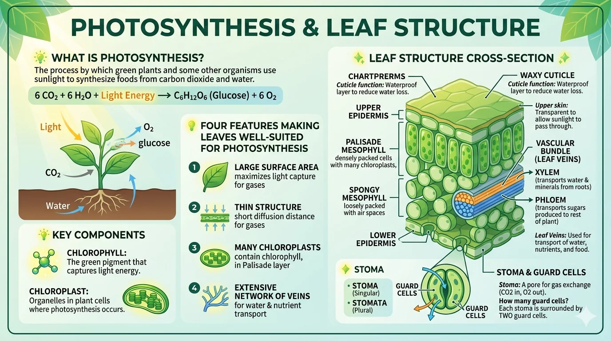
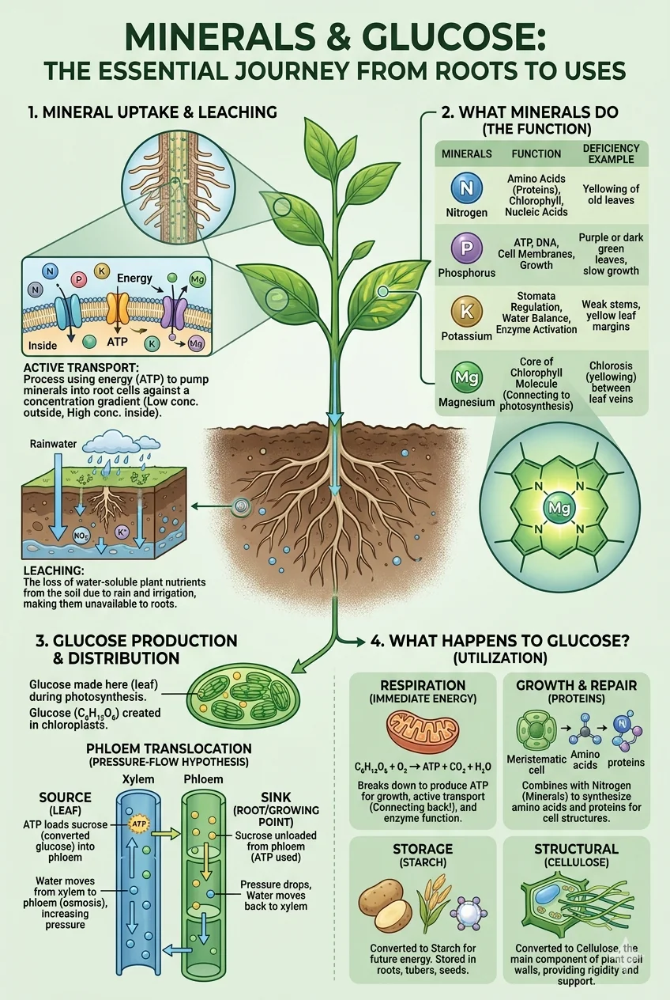
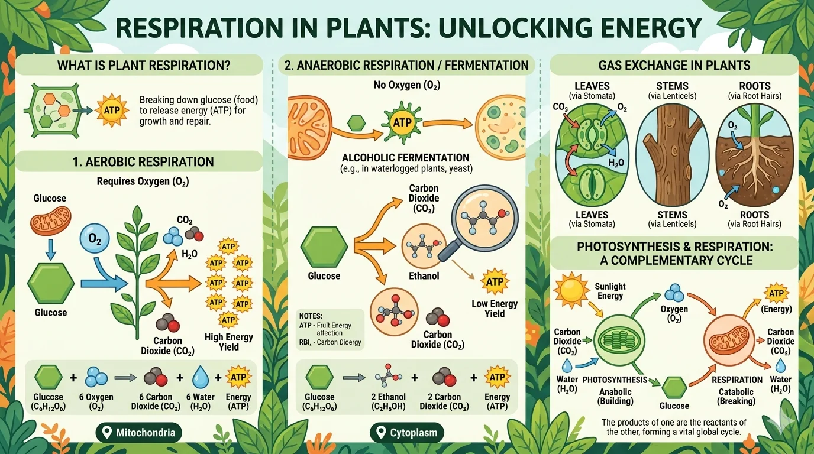

Chapter Overview
Key skills you will develop by the end of Chapter 1: Plant Systems.
General Science: Plant Systems
Complete chapter notes with all diagrams, worked examples and vocabulary: PDF format
Please note: The content on this page is a concise preview of the chapter. The complete notes, including all detailed explanations, diagrams, worked examples, and exam-style questions, are available in the PDF. We strongly encourage you to download the PDF for the full learning material.
Chapter Diagrams
High-quality illustrated diagrams from W.H. Academy Class 7 Science notes.









Root System and Shoot System
Complete Q&A on the two main plant systems, their parts and functions.
Root System: Definition, Types and Functions
1. What is a root system and what does it do?
First, it anchors the plant firmly in the soil so that it does not fall over or get blown away by the wind.
Second, it absorbs water and dissolved minerals from the soil and delivers them to the rest of the plant through the transport system.
2. What is a taproot? Give an example.
A carrot is a well-known example of a taproot. In a carrot, the taproot is also a food storage organ.
Other examples include radish, mustard and beetroot. These plants belong to the dicot group.
3. What is a fibrous root system?
Fibrous roots are shallow and cover a wide area of soil, which helps prevent soil erosion.
Examples include wheat, rice, maize and grass. These plants belong to the monocot group.
4. What is an adventitious root system? Give examples.
Types of adventitious roots:
Prop Root: Grows from lower nodes of the stem downward into the soil to provide extra support. Example: Banyan tree.
Stilt Root: Grows obliquely from lower stem nodes into the soil. Example: Maize, Sugarcane.
Pneumatophore: Grows upward from underground roots into the air to allow the plant to breathe in waterlogged conditions. Example: Mangrove.
Clinging Root: Grows from stem and helps the plant climb surfaces. Example: Money Plant.
Shoot System: Parts and Functions
5. What is a shoot system and what parts does it include?
The shoot system performs three main roles: it carries out photosynthesis (mainly in the leaves), it provides support for the plant, and it carries out reproduction through flowers and fruits.
6. What is the function of the stem?
It holds the leaves in a position where they can receive maximum sunlight for photosynthesis.
It holds the flowers upright so they can attract insects for pollination.
It acts as a transport highway, carrying water and minerals upward through xylem and food downward through phloem.
Some stems also store food and water, for example in cacti and sugarcane.
7. What is the function of leaves?
Leaves also carry out transpiration, releasing water vapour through stomata to help pull water upward from the roots.
They perform gas exchange, taking in carbon dioxide and releasing oxygen during the day.
Some leaves also store food and water, such as the leaves of aloe vera.
8. What are buds and flowers?
Flowers contain the reproductive organs of the plant. Most flowers have brightly coloured petals and produce a sweet scent to attract insects for pollination, which leads to the production of seeds and fruits.
Transport in Plants: Xylem and Phloem
How water, minerals and food move through the plant.
The Vascular Transport System
1. What is the transport system of a plant and where is it found?
These vascular bundles run throughout the roots, stems and leaves of the plant, forming a continuous network that transports substances to every cell.
2. What is xylem? What does it carry and how does it work?
Xylem is made of dead cells joined end to end, forming continuous hollow tubes. The walls of xylem are thickened and strengthened with a substance called lignin, which also gives mechanical support to the plant. This thickened xylem tissue is essentially what we call wood.
New xylem is added each year, forming the annual rings visible in tree trunks.
3. What is phloem? What does it carry and how does it differ from xylem?
Unlike xylem, phloem is made of living cells. The end walls of phloem cells have small holes (sieve plates) that allow the sugar solution to pass from one cell to the next.
Phloem can carry food both upward and downward depending on where it is needed.
Osmosis and Root Hairs
How water enters the plant through root hair cells.
Osmosis: Definition and Process
1. What is osmosis?
In plant roots, the concentration of water in the soil is higher than inside the root cells. Because of this difference in concentration, water moves from the soil into the root cells by osmosis.
A partially permeable membrane is a thin layer that allows small molecules like water to pass through but prevents larger molecules like dissolved minerals and sugars from passing freely.
2. What are root hairs and why are they important?
Root hairs are important because they greatly increase the surface area of the root, allowing much more water and dissolved minerals to be absorbed from the soil in a shorter time.
Transpiration and Stomata
How plants lose water vapour and why it is important.
Transpiration: Process and Control
1. What is transpiration?
As water evaporates from the leaf cells, it creates a pulling force that draws more water upward through the xylem from the roots. This is called the transpiration stream.
2. What are stomata and guard cells?
Each stoma is surrounded by two sausage-shaped guard cells. When the plant has plenty of water, the guard cells become turgid (swollen with water) and the stoma opens, allowing transpiration and gas exchange. When the plant is short of water, the guard cells lose water, become flaccid, and the stoma closes to prevent further water loss.
3. What four factors affect the rate of transpiration?
Wind: On windy days, water vapour is blown away from the leaf surface, maintaining a large concentration difference that drives faster transpiration.
Humidity: On dry days, the air can hold more water vapour, so transpiration is faster. On humid days, the air is already full of water vapour and transpiration slows down.
Time of day: Stomata are open during the day when photosynthesis occurs. Transpiration is therefore fastest during the day and stops at night when the stomata close.
Photosynthesis and Uses of Glucose
How plants make food and what they do with it.
Photosynthesis: Equation and Requirements
1. What is photosynthesis? Write its word equation.
Word Equation:
2. What are the five uses of glucose in a plant?
1. Respiration: Glucose is broken down to release energy for all the plant's life processes.
2. Cellulose: Glucose is used to make cellulose, which forms strong cell walls.
3. Starch and oils: Excess glucose is converted into starch or oils for storage in roots, stems, seeds and fruits.
4. Protein: Glucose combines with nitrogen obtained from nitrates in the soil to make amino acids and proteins for growth and repair.
5. Chlorophyll: Glucose combines with magnesium absorbed from the soil to make more chlorophyll for photosynthesis.
Respiration in Plants
How plants release energy from glucose: all the time, even at night.
Aerobic and Anaerobic Respiration
1. What is respiration in plants? Where does it take place?
Plants respire in all their cells, all the time: day and night: unlike photosynthesis which only occurs during daylight.
2. What is aerobic respiration? Write its word equation.
Word Equation:
3. What is anaerobic respiration? When does it occur in plants?
Word Equation:
Chapter 1 Vocabulary
Important terms you must know: learn these definitions for exam questions.
| Term | Definition |
|---|---|
| Root system | The underground part of a plant that anchors it and absorbs water and minerals from the soil |
| Taproot | A single large root growing straight down with lateral roots branching from it. Example: carrot |
| Fibrous root | Many roots of similar size spreading out from the base of the stem in all directions |
| Adventitious root | A root that grows from any part of the plant other than the primary root |
| Shoot system | All above-ground parts of the plant including the stem, leaves, flowers, fruits and buds |
| Xylem | Dead vascular tissue that transports water and minerals upward through the plant |
| Phloem | Living vascular tissue that transports sugars (food) upward and downward through the plant |
| Vascular bundle | A strand-like structure containing both xylem and phloem, found in stems and leaves |
| Osmosis | Movement of water from a region of higher water concentration to lower concentration through a partially permeable membrane |
| Root hair | A tiny extension of a root cell that increases the surface area for absorbing water and minerals |
| Transpiration | The loss of water vapour from leaves through the stomata |
| Stomata | Tiny pores on leaf surfaces that control gas exchange and water vapour loss |
| Guard cells | Pairs of cells surrounding each stoma that control its opening and closing |
| Photosynthesis | The process by which plants use light energy to convert CO₂ and water into glucose and oxygen |
| Chlorophyll | The green pigment found in chloroplasts that absorbs light energy for photosynthesis |
| Respiration | The release of energy from glucose in all living cells, occurring all the time |
| Aerobic respiration | Respiration that uses oxygen: Glucose + O₂ → CO₂ + Water + Energy |
| Anaerobic respiration | Respiration without oxygen: Glucose → Ethanol + CO₂ + Energy (much less) |
Test Yourself: Chapter 1 Quiz
Chapter-wise MCQs aligned with APSACS and FBISE syllabus. No login required. Instant results.
Start Quiz NowWant Live Explanation of Plant Systems?
Join W.H. Academy: Live tutoring, recorded lectures and full chapter solutions for APSACS and FBISE students in Rawalpindi and online across Pakistan.